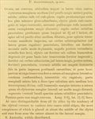

Click on images to enlarge
{kind=link}

Fig. 1. Paropsis transversalis, description
Fig. 2. Weise (1917), synonymy with P. corrugata
Name
Paropsis transversalis Blackburn, 1896
Corresponds to
Ta71, Ta49 or Ta46, see Diagnosis and Notes below.
Diagnosis and Notes
Blackburn (1896) deals with T. transversalis as part of his 'subgroup ii' (i.e., those species without "strongly marked characters", whose greatest height is not or scarcely in front of the middle of the elytral margin and whose elytra are depressed under the humeral callus). Within that group, he characterises it as:
A. Inner edge of humeral callus distinctly nearer to lateral margin of elytra than to suture;
BB. Sides of prothorax not at all explanate;
CC. Elytra having a well defined transverse wheal-like ridge.
This species was placed as a junior synonym of T. corrugata (Chapuis) by Weise (1917). T. transversalis could be Ta46, Ta49 or Ta71, all of which conform for the most part with the description of this species. The size range that Blackburn gives does not fully overlap with that of any of these species, but it is possible that the specimens he had were of more than one of these species, as they are very similar in external morphology and Blackburn did not use genitalia at all in his treatment of the genus. As Blackburn indicates his species is "widely distributed", it is possibly based on Ta71, which does have a wide distribution in the Murray-Darling drainage basin. However, at 5.8-6.6 mm, the Ta71 size range only barely overlaps with the 6.4-7.4 mm given by Blackburn. Ta49 is somewhat larger than Ta71 and would better fit Blackburn's size range, but I have not recorded it south of about Armidale, in northern N.S.W. Ta46 is larger still, with most specimens exceeding 7.4 mm in length.
The synonymy with T. corrugata may well be correct, but even if Weise was able to compare the actual type specimens, there is still a strong possibility that Chapuis's and Blackburn's species are different.
Type specimen
Not examined.
Original description
[Original description shown in figure, translated from Latin using ChatGPT, 04/2026]
Ovate; fairly convex, of greater height (in lateral view), with the highest point placed about the middle of the elytral margin (or a little before it); shiny; beneath reddish or reddish-pitchy; head and pronotum reddish, the latter more or less shaded with pitchy; elytra pitchy, variegated with reddish and with black warts; antennae and legs reddish (in some specimens darker). Head rather closely and finely punctate. Pronotum wider than long as about 2½ to 1, from the apex broadened to or a little beyond the middle, behind the apex distinctly transversely impressed, fairly closely and somewhat irregularly (coarsely rugulose at the sides) punctate; sides fairly strongly rounded, not at all flattened; posterior angles rounded; scutellum almost smooth. Elytra fairly strongly depressed below the humeral callus (and behind the base broadly and strongly transversely impressed), strongly and fairly closely somewhat in rows (more so at the sides, posteriorly less so, but more strongly) punctate; with fairly large, shiny verrucae arranged in rows (these partly absent in the postbasal impression, and behind this region confluent so as to form an almost continuous transverse ridge from near the suture to the lateral margin); interspaces scarcely rugulose; marginal area narrower, separated from the disc by a groove broadly interrupted before the middle; humeral callus more distant from the suture than from the lateral margin; basal ventral segment sparsely and rather finely punctate.
Female more convex than the male.Length 3–3½ lines [~6.4-7.4 mm]; width 2½–2⅕ lines [~5.3-4.7 mm].
References
Blackburn, T. 1896, "Revision of the genus Paropsis. Part I", Proceedings of the Linnean Society of New South Wales, vol. 21, no. 4, 637-693 (page 676).
Chapuis, F. 1877, "Synopsis des espèces du genre Paropsis", Annales de la Société Entomologique de Belgique (Comptes-rendus), vol. 20, 67-101 (page 96).
Weise, J. 1917, "Uber australische Chrysomelinen", Archiv für Naturgeschichte, vol. 82, 124-141 (page 133).
Copyright © 2026. All rights reserved.